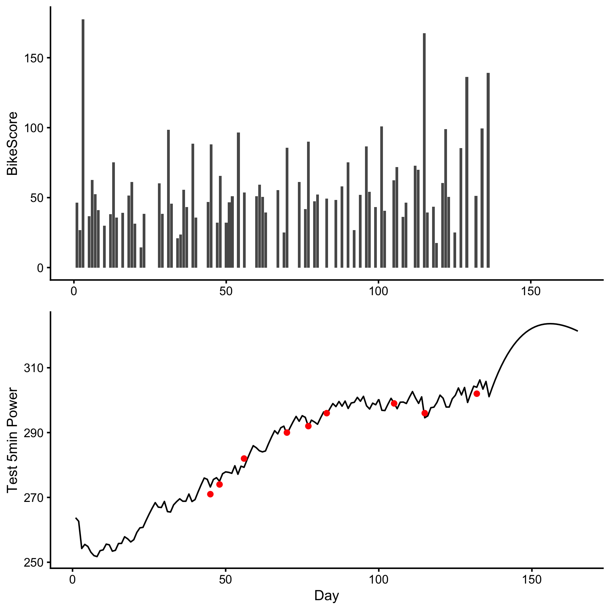

The goal of dorem is to provide easy-to-use dose-response models utilized in sport science. This package is currently in active development phases.
Installation
You can install the development version from GitHub with:
# install.packages("devtools")
devtools::install_github("mladenjovanovic/dorem")
require(dorem)Example
To provide very simplistic example of dorem, I will use example data provided in supplementary material of Clarke & Skiba, 2013 paper, freely available on the publisher website. Data set contains cycling training load (i.e. dose) measured using the BikeScore metric (in AU) over 165 days, with occasional training response measured using 5-min Power Test (in Watts). Banister model (explained in aforementioned paper) is applied to understand relationship between training dose (i.e., BikeScore metric) and training response (i.e., 5-min Power Test):
require(dorem)
require(tidyverse)
require(cowplot)
data("bike_score")
banister_model <- dorem(
Test_5min_Power ~ BikeScore,
bike_score,
method = "banister"
)
# Get model predictions
bike_score$pred <- predict(banister_model, bike_score)$.pred
# Plot
dose <- ggplot(bike_score, aes(x = Day, y = BikeScore)) +
theme_cowplot(10) +
geom_bar(stat = "identity") +
xlab(NULL)
response <- ggplot(bike_score, aes(x = Day, y = pred)) +
theme_cowplot(10) +
geom_line() +
geom_point(aes(y = Test_5min_Power), color = "red") +
ylab("Test 5min Power")
cowplot::plot_grid(dose, response, ncol = 1)
This package is in ongoing development phase and more examples will follow…